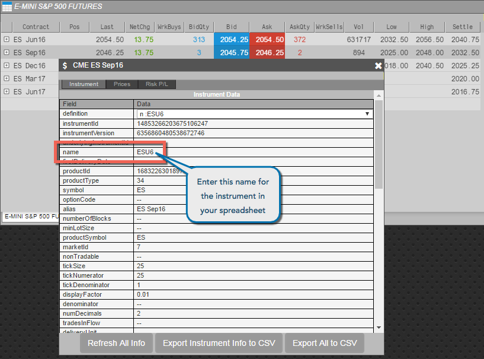

TT does not allow you to change instrument and account information after an algo is launched. Therefore, TT does not support linking instrument or account values from Excel. You can, however, store the values in your spreadsheet and use the standard system copy and paste functionality to copy the values from your spreadsheet into an Algo Dashboard or Autotrader widget before launching the algo.
Note When you use the system copy and paste functionality, the values are not linked from Excel. If the value changes in the spreadsheet, it will not be updated in TT.
If you choose to copy instruments from your spreadsheet to TT, you must use what is commonly called the short name to identify the instrument. For example, if you want to reference the CME September 2016 E-mini futures instrument, you would put ES Sep16 (alias) or ESU6 (short name) in the spreadsheet cell.
To use the short name, TT provides an easy way for you to get the required instrument name to use in your spreadsheet. To get the short name for an instrument:
Open a Market Grid.
Select the desired instrument and type Shift+Ctrl+X to display the instrument data.
You can then see the value in the instrument's name field.

Copy the value in the instrument's name field, and paste into your spreadsheet.